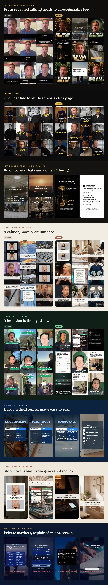

How I Built Shared AI Workflows for an Agency Team
50+ Claude skills for scripts, video reviews, deadlines and reports, with 35 shared so the whole strategy team works the same way.

One shared way to handle repeat work
A content strategy lead's week is hundreds of small checks: is every video on time, is every script on brand and compliant, did the editor fix the notes, how did last week's posts do. Each one is small, and together they fill the week.
I turned each of those checks into a skill that runs the same way every time, for any strategy lead, and connected them all to one source of truth.
Manual work vs shared AI skills
The small tasks that filled the week
Each strategy lead ran several creator and brand accounts, each with its own pod of editors, social media managers and scriptwriters. Videos had to be done three days before posting. Checking that meant opening every client's schedule and every video link by hand, then messaging people one by one.
Scorecards were filled in from memory and scattered Slack threads. Reports were pulled from each analytics tool by hand. Some accounts were in regulated niches like healthcare, lending and a Nasdaq-listed fund, so every script also had to pass compliance rules. And every strategy lead had their own way of doing all of it.
What I built for the team
Scripts
Weekly per client, plus on demandA factory skill builds a scriptwriting skill for each client from their own docs, analytics and past winners, with that client's compliance rules built in. I built 10 this way. A weekly handoff builds the writer packet and trend report for every client.
Video review
Every batchWatches each edit against the script and style guide, posts 3 to 5 clear editor comments in Krok, then learns from what the strategy lead keeps, edits or deletes.
Deadlines and team QC
Several times a day, plus weeklyDeadline checks run through the day, grade every editor and social media manager pass or fail in a shared tracker, and draft the reminder messages for the strategy lead to send. A Monday run scores each editor and social media manager against the team rubric.
Reporting
WeeklyWeekly performance reports from Metricool and SocialPruf, trend analysis, views guarantee tracking and a KPI worksheet.
Client health and meetings
Weekly and per callA weekly alignment audit across every account, pod call prep and recaps, and client call notes from Fathom posted to Slack.
Client setup and brand
On demandNotion page setup, visual brand guidelines, Instagram profile and thumbnail refreshes, and launch strategy docs.
The library itself
OngoingA 41-page playbook in Notion that walks a new strategy lead from day one to running every rhythm, one client roster every skill reads from, version stamps on every shared skill, and a simple routine to tell the team when to update.
Creative work made with the skills
Many of the skills make finished visuals for clients. Each pair below puts a real feed from a few months ago next to the redesign. The copy was written by ChatGPT from my skill files and brand rules, and Claude built every layout around it, so the two models each do the part they are best at.
Estimated time saved each week
Here is my estimate for one strategy lead with 10 accounts, about 18 editors and 7 social media managers.
| Task | How often | By hand | With the skill | Saved a week |
|---|---|---|---|---|
| Video review comments * | About 70 videos a week | 10 min each | 6 min each | 4.7 h |
| Editor feedback on problem videos * | About 5 a week | 30 min each | 6 min each | 2.0 h |
| Deadline and posting checks * | Daily | 60 min | 12 min | 4.0 h |
| Reminder messages and strike notes | Weekly | 90 min | 15 min | 1.3 h |
| Editor, social media manager and writer scorecards | Weekly | 3 h | 45 min | 2.3 h |
| Writer packets and trend research * | Weekly | 3 h | 45 min | 2.3 h |
| Cutting long footage into scripts * | Weekly | 2.5 h | 30 min | 2.0 h |
| Account alignment audit | Weekly, 10 accounts | 20 min each | 3 min each | 2.8 h |
| Performance reports and views guarantee pace | Weekly | 3.25 h | 45 min | 2.5 h |
| KPI worksheet and team sync notes | Weekly | 90 min | 15 min | 1.3 h |
| Pod call prep and recap | 3 a week | 35 min each | 10 min each | 1.3 h |
| Client call notes to Slack | 2 a week | 30 min each | 6 min each | 0.8 h |
| New client setup: strategy docs, brand guide, script skill | About 1 every 2 weeks | 6 h | 1.5 h | 2.3 h |
| Remix winners report | Weekly | 60 min | 15 min | 0.8 h |
That adds up to about 30 hours. I take 30% off for checking the output and fixing runs that fail, which leaves about 21 hours a week, more than half a full-time week back for every strategy lead. Rows marked * use the times strategy leads said out loud on our recorded team calls, like nine-hour review days and an hour a day of deadline checks. The rest are careful estimates. For scale, our head of strategy expected Claude to save three to five hours a day.
What it added up to
- 50+ skills and scheduled tasks built in about four months, with 35 shared across the whole strategy team through a 41-page playbook in Notion.
- 260+ version updates shipped to the shared skills, so every strategy lead always ran the latest version.
- 53 logged deadline check runs across 28 days, with about 250 pass or fail grades recorded for editors and social media managers.
- A weekly scorecard covering about 18 editors and 7 social media managers on a 7-part rubric.
- 10 client script skills built from one factory, each with that client's compliance rules.
- Visual brand guidelines for 9 accounts, and 102 thumbnail covers refreshed for a single account.
- Up to 12 accounts at once, and 16 over the contract.
What the team said
“I think Meridian could save me three to five hours a day on Claude.”
“I think it's like a life-changing thing.”
“This is really great. Like, you don't have to go in and check manually.”
“Your Claude skill is helping a lot, to be honest.”
“That HTML visual was so much easier to walk through.”
“They're really helpful and I always send them to my clients.”
Could your team use shared AI skills?
If your team runs the same checks, reports and handoffs every week, those can be skills. I build them so anyone on the team can run them, connect them to the tools you already use, and set up a simple way to keep them updated.
Your team gets its time back for the judgment calls that need a person.
See it live
Where to go from here
Want repeatable AI workflows for your team?
More case studies
Tell me what you'd like to stop doing by hand
Send a short note about your team, your Shopify store or the repeat work you want help with. You don't need to know which service fits yet. I reply within 24 hours on weekdays.